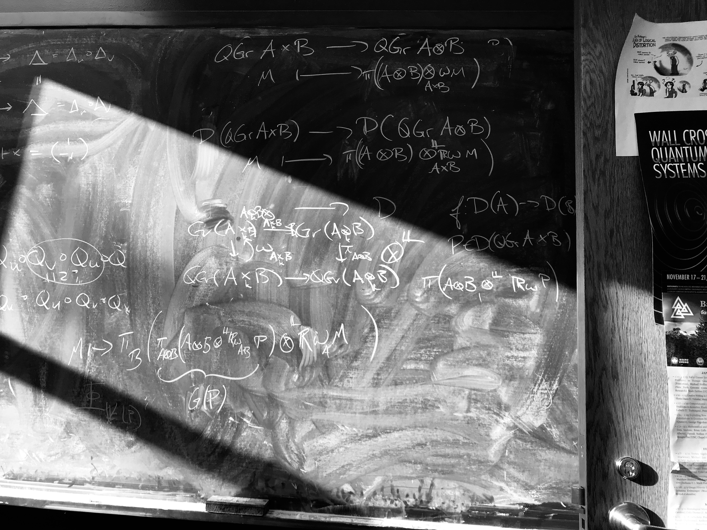

Assistant Professor
University of Louisiana Monroe
Get to know me
I am an Assistant Professor in the Mathematics Program at the University of Louisiana Monroe. I was previously a Visiting Assistant Professor in the Department of Mathematics at Lafayette College.
I am a Vermonter, born and raised. When I'm not doing mathematics, I tend to spend my time outdoors. I enjoy hiking, backpacking, cycling, gardening during the summers and snowboarding in the winter.
My research interests lie mainly in algebra and geometry. In particular, I am interested in derived categories, homological and homotopical algebra, and model categories. I am especially interested in applying abstract homotopical methods to the study of derived categories in algebraic geometry.
You can find general information about me on my Curriculum Vitae. For more specific information about my research program and my teaching, take a look at my Research Statement and my Teaching Statement. Information about my current and previous courses can be found on my Teaching Page.
Education History
I received my Ph.D. on May 12, 2018 from the Department of Mathematics at the University of South Carolina under the direction of Matthew Ballard. My dissertation is titled Geometry of Derived Categories on Noncommutative Projective Schemes.
Before that I completed an M.S. in Mathematics at the University of Vermont and a B.S. in Computer Science at Rensselaer Polytechnic Institute.
Thanks to the Mathematics Genealogy Project at NDSU, you can view my Academic Genealogy.
About my work
I work primarily at the intersection of Kontsevich and Artin-Zhang style noncommutative algebraic geometry, where I study the derived category of quasi-coherent sheaves on noncommutative projective schemes via the framework of differential graded categories. My work has a particular emphasis on importing methods of modern projective algebraic geometry into the study of noncommutative graded algebras.
My ORCID number is
 orcid.org/0000-0002-3624-837X
orcid.org/0000-0002-3624-837X
Copies of my preprints can be found on the arXiv. Note that these may not always match the published version.
How to reach me
Get in touch
Email: farman (at) ulm (dot) edu
Phone: (318) 342 - 1851
Mail: Mathematics Program
University of Louisiana Monroe
Walker Hall
700 University Ave
Monroe, LA 71209
Stop by
Office: Walker 3-34
To Be Announced.